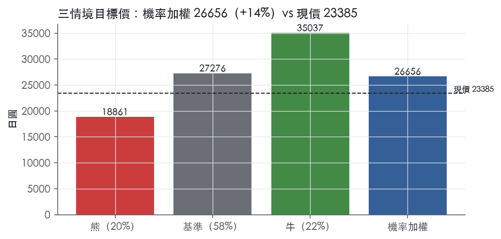
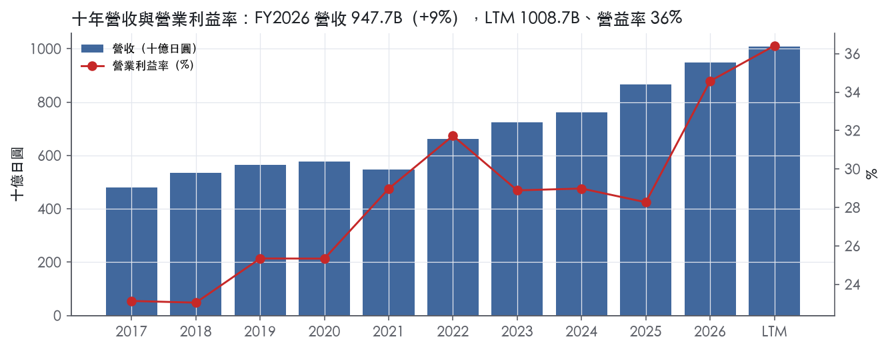
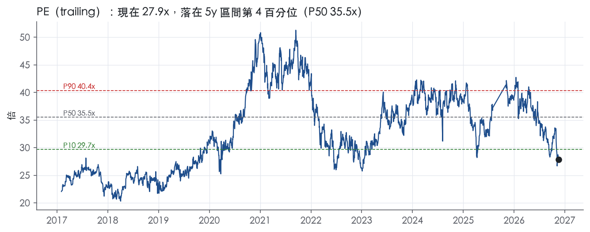
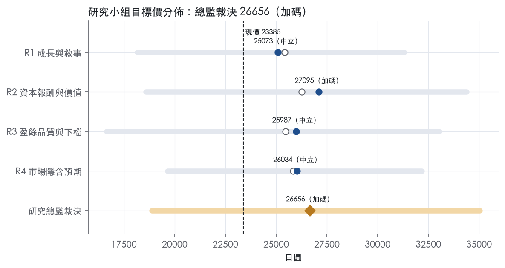
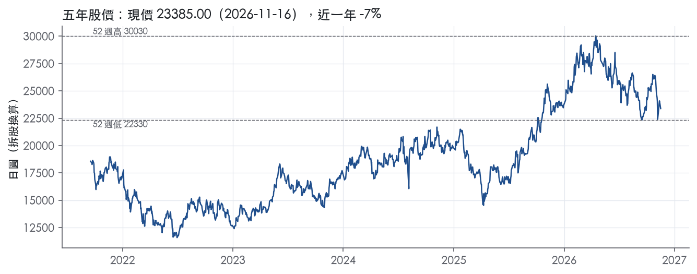

評等總表 › 未分類 › 7741.T
乾淨營益率上行，倍數回P25–P50中段，看多｜評等 加碼｜目標價 26656
| 報告日 | 評等 | 目標價 | 當時股價 | 超額報酬 |
|---|---|---|---|---|
| 2026-11-16 | 加碼 | 26,656 | 23,385 | +7.6% |
| 評等 | 加碼（邊界，鄰近中立） |
| 12 個月目標價 | 26656 日圓 |
| 現價 | 23385.00 日圓（2026-11-16） |
| 預期報酬 | 股價 +14.0%＋股息 1.4%＝總報酬 +15.4%；日股門檻 7.8%，超額 +7.6% |
| 估值方法 | P/E 27.5x，套在第 5–8 季的EPS（也就是一年後的未來四季） |
| 三情境 | 熊 18861／基準 27276／牛 35037 |
| 研究流程 | 四位研究員兩輪辯論＋研究總監裁決 |
| 資料來源 | EDINET、TDnet、J-Quants、Yahoo、FRED（全免費） |
乾淨營益率上行，倍數回P25–P50中段，看多（研究總監裁決，四位研究員兩輪辯論後）
評等 加碼（邊界，鄰近中立）｜12 個月目標價 26656 日圓（總監三情境機率加權 27301 與研究員中位數 26011 各半）｜現價 23385.00（2026-11-16）
預期報酬：股價 +14.0%＋股息 1.4%＝總報酬 +15.4%。日股門檻 7.8%，超額 +7.6%，離中立的分界不到三個百分點，屬邊界評等（落在其他級距的機率約三成）。
估值方法：P/E 27.5x，套在第 5–8 季的EPS（也就是一年後的未來四季）。三情境：熊 18861（20%）／基準 27276（58%）／牛 35037（22%）。
什麼會讓研究總監改變看法：FY2027Q3短信情報・通信分部營收年增跌破10%或分部利益增速低於營收增速，倍數退回P25 26.6x並轉中性；2月全年利潤予想若營業利益增幅低於營收增幅，營益率擴張論點失效。
| 過去四季（實際，FY2027Q2） | 未來四季 | 第 5–8 季 | 第 9–12 季 | |
|---|---|---|---|---|
| 營收（B） | 1,008.7B | 1,104.6B | 1,204.0B | 1,294.3B |
| 營收成長 | 13.0% | 9.5% | 9.0% | 7.5% |
| 營業利益率 | 36.4% | 34.0% | 34.5% | 35.0% |
| EPS（日圓） | 839.08 | 874.69 | 991.87 | 1108.96 |
| EPS 成長 | 38.0% | 4.2% | 13.4% | 11.8% |
| 每股股息（日圓） | — | 0.00 | 0.00 | 0.00 |
| P/E（現價） | 27.9x | 26.7x | 23.6x | 21.1x |
| 股息殖利率（現價） | 1.4% | — | — | — |
過去四季為申報數字；預測為研究總監的假設、程式計算。倍數與殖利率都用現價計算，用來看現價對應各期獲利的高低。
| 情境 | 機率（歷史） | 故事 | 未來四季營收成長 | 第 5–8 季營益率 | 倍數 | 目標價 | 股價漲跌 |
|---|---|---|---|---|---|---|---|
| 熊 | 20%（19%） | 風險表第1條情報・通信需求反轉（開發需求退潮加HDD放緩）為主、第2條日圓升至145為輔，營益率壓縮3點，倍數落在前瞻帶P10；觸發點2027-02 FY2027Q3短信 | 5.0% | 31.5% | 23.0x | 18861 | -19.3% |
| 基準 | 58%（59%） | 剔除一次性後乾淨營益率由34%每年升約0.5點、營收循公司暗示的一成成長收斂，倍數由P25附近回到P25–P50中段 | 9.5% | 34.5% | 27.5x | 27276 | 16.6% |
| 牛 | 22%（22%） | R2原版牛情境：EUV向け先端品由開發轉量產、近線HDD續強、美國內視鏡止跌，日圓走160路徑，上半期買回加速延續至股數年減4%，倍數到前瞻帶P75；撤回原先對y2營收與y3營益率的上修 | 12.0% | 36.0% | 32.0x | 35037 | 49.8% |
目標價由程式依研究總監的驅動與倍數計算；機率由研究總監給定。括號內是歷史頻率：把這檔股票過去十年 12 個月報酬的波動形狀，置中在基準情境，結果落在各情境附近的比例。

四位研究員用不同方法各自估值，回應研究總監的質疑後交出第二輪，最後由總監逐點裁決。各研究員的主張見第七章，裁決理由見第八章，完整論證見《研究底稿》。
| 立場（一輪→二輪） | 加權目標價（一輪→二輪） | 評等（一輪→二輪） | 第二輪倍數 | 熊～牛目標價 | |
|---|---|---|---|---|---|
| R1 成長與敘事 | 看多→中性 | 25419→25073 | 中立→中立 | 29.0x | 18149～31319 |
| R2 資本報酬與價值 | 看多→看多 | 26264→27095 | 加碼→加碼 | 28.0x | 18562～34391 |
| R3 盈餘品質與下檔 | 中性→中性 | 25463→25987 | 中立→中立 | 27.0x | 16647～33027 |
| R4 市場隱含預期 | 看多→中性 | 25829→26034 | 中立→中立 | 25.5x | 19648～32175 |
| 研究總監裁決 | 看多 | 26656 | 加碼 | 27.5x | 18861～35037 |
目標價由程式依各自的驅動與倍數計算；評等＝機率加權總報酬 − 日股門檻。
HOYA是一家靠眼鏡鏡片、醫療內視鏡等生活醫療產品賺現金流、再把資金投到半導體光罩等高利潤資訊通信事業的雙引擎企業集團。公司由HOYA株式会社及連結子公司131家（國內7家、海外124家）、關係公司12家構成，從事保健醫療相關產品、醫療相關產品、電子相關產品、映像相關產品的製造銷售及其附帶事業。集團本社制定經營戰略，由以生活照護（ライフケア）及資訊・通信為中心的各事業部門分別負責執行。銷售上，國內大部分採對廠商、專門店等的直接銷售方式，出口則主要透過當地關係公司進行。FY2026（2026年3月期）合併營收947.75B日圓，年增9.4%，LTM（至FY2027Q2）營收已達1,008.75B日圓。公司同時經營政策保有股處分與庫藏股買回——FY2026財年內自己股票取得支出增加、純投資目的股票僅剩非上市13檔與上市以外2檔，呈現東證要求提高資本效率下的典型回應。
公司以兩大報告分部經營：生活照護（ライフケア）事業與資訊・通信事業，另有已出售的「其他」事業。生活照護事業下的保健醫療相關產品含眼鏡鏡片、隱形眼鏡；醫療相關產品含內視鏡、處置器具、自動內視鏡洗淨裝置、眼內晶體、眼科醫療器材、人工骨、金屬整形植入物、層析用擔體。資訊・通信事業下的電子相關產品含半導體用光罩基板・光罩、FPD用光罩、硬碟用玻璃基板；原「映像相關產品」已改名為「光學解決方案」，涵蓋光學鏡片・玻璃材料及光學相關機器。FY2027上半期（2026年4-9月）生活照護事業營收308.15B，年增8.5%，分部利益62.57B，年增24.8%；資訊・通信事業營收207.74B，年增23.1%，分部利益114.45B，年增27.9%。資訊・通信事業利潤率明顯高於生活照護事業，是集團的獲利引擎。資本支出分配上，FY2026全年設備投資總額65.71B，較前期增加4.79B，其中生活照護事業30.25B（占46%，主要為鏡片增產），資訊・通信事業34.20B（占52%，主要為半導體光罩基板增產）。研發費用方面，FY2026全集團研發費總額36.29B，其中生活照護分部22.48B、資訊・通信分部13.21B。各分部占集團營收之精確百分比10-K未揭露，僅能由分部營收與合併營收相除粗估。
公司客戶結構分為鏡片／內視鏡等生活醫療終端客群，與半導體製造商、HDD及FPD廠等資訊通信中間材客群，後者營收波動大、受下游景氣與匯率雙重影響。資訊・通信事業產品多為中間生產材・零部件，其成長性大幅取決於使用本公司產品製造的高科技零組件乃至最終消費品之景況；且該事業海外銷售比重大，匯率變動影響亦大，故長期合併業績預測困難。地區布局上，北美、歐洲、亞洲各設地區總部，強化與各國地區的關係、提供法務支援及內部監理等活動以支援事業推展，集團整體財務本部設於荷蘭與新加坡。生活照護事業內，眼鏡鏡片銷售在歐洲、中國及南美地區的高附加值產品（如MiYOSMART）表現突出；醫療用內視鏡則在美國市場銷售停滯。從股東結構看，日本マスタートラスト信託銀行（信託口）為最大股東，持股18.51%，前十大股東合計持股41.57%，外資機構（State Street、Deutsche Bank、Government of Norway等）占比顯著，反映國際法人投資者對該股的高關注度。
最近四季營收與利潤率雙升，資訊・通信事業是主要推動力。FY2026Q3（2025年10-12月）合併營收244.72B日圓，年增10.8%，淨利91.60B日圓，EPS 269.64日圓。FY2026Q4（2026年1-3月，FY2026全年期末）合併營收248.13B日圓，年增14.5%，淨利54.22B日圓，EPS 161.04日圓。FY2027Q1（2026年4-6月）合併營收255.74B日圓，年增16.0%，營益率32.3%，淨利65.79B日圓。FY2027Q2（2026年7-9月，即當期第2四半期）合併營收260.15B日圓（即260.15B），年增10.9%，營益率34.7%，淨利70.71B日圓（即70.71B歸屬母公司股東）。拉長看FY2027上半期（2026年4-9月）累計：合併營收515.89B，年增13.4%；通常營業活動利益171.72B，年增25.9%；營業利益173.43B，年增31.6%；中間利益136.44B，年增28.3%，稅前利益率34.4%，較去年同期提升3.8個百分點。公司表示生活照護事業與資訊・通信事業均表現強勁，帶動大幅增收；生活照護事業收益性改善，加上高收益的資訊・通信事業增收，使利潤也大幅增加。由於FY2027通期營收預測與前期實績差異已達揭露標準，公司於此次決算短信首次公布FY2027（2027年3月期）通期營收預測；惟本份短信未揭露具體數字，資料包company_forecast欄亦未見明確全年預測值，故本報告不列具體預測數字。
公司將全球高齡化推進及新興國家中間所得階層增加帶動的生活照護事業，與資訊化社會進展帶動的資訊・通信事業半導體・HDD相關產品，視為成長驅動力，同時認為開發、獲取支撐未來10年、20年成長的新成長事業，是重要經營課題。公司提出六項中長期經營戰略重點：對市場變化的迅速靈活應對與經營資源效率運用、創造新事業與新技術、在成長市場擴大事業、應對網路安全、應對地緣政治風險、應對永續性（ESG）課題。在成長市場方面，公司指出數位裝置長時間使用導致年輕世代視力下降及全球高齡化，使需要視力矯正的人口持續增加；醫療現場則要求減輕患者身體負擔與縮短治療時間，低侵入性醫療快速普及；資訊化社會進展亦推動高性能、省電半導體開發及資料中心投資擴大，公司將支援視力、健康及資訊化社會發展的產品定位為成長領域，積極投入經營資源擴大事業。公司並以SVA（Shareholders Value Added，股東價值附加）作為衡量「利潤超過資本成本」的核心經營指標，追求企業價值最大化。從財務結果看，資訊・通信事業（尤其半導體光罩基板與EUV先進製程）的成長速度與利潤率均顯著優於生活照護事業，是近四季利潤增幅的主要來源；生活照護事業中的醫療用內視鏡在美國市場停滯、正進行結構改革，是唯一的拖累項目，需持續觀察改革進度是否能帶動回升；整體而言，公司的資產負債表淨現金部位龐大（為負519.73B日圓），具備持續併購與股東回饋（配息、庫藏股）的財務彈性。

HOYA 評為寬護城河，趨勢穩定。我們有把握未來 10 年以上 ROIC 仍高於資本成本，依據有三：先進光罩基板的製程 know-how、醫療與鏡片端的客戶轉換成本，以及過去 8 年 ROIC 最低值仍遠高於資本成本代理值。不給「變寬」，因為最新年度的利潤率高點含一次性收益與半導體景氣成分，結構性擴大還沒被證明。
優勢來自無形資產與轉換成本兩類。網路效應、成本優勢、效率規模在原文找不到直接證據，不列。
無形資產（製程技術與品牌）：公司正在開發能穩定供應高品質光罩基板的技術，對象是包括相位移光罩用途在內的 EUV 先進品。FY2026 資訊・通信設備投資 34,195M 日圓、年增 43.2%，主要用於半導體用光罩基板增產。公司在擴產的同時仍維持高報酬，代表定價權來自品質與良率門檻，不靠價格競爭。HDD 端，公司同步開發次世代記錄方式 HAMR 用基板，以及高剛性、薄板化技術。品牌面，集團旗下有 PENTAX OF AMERICA、PENTAX EUROPE 等內視鏡銷售子公司。
轉換成本：內視鏡業務除鏡體外，還涵蓋處置具（醫療配件）與自動內視鏡洗淨裝置。公司在馬來西亞檳城設有負責內視鏡修理的子公司。醫院導入鏡體、洗淨與維修一整套體系後，更換供應商就得重新訓練人員並汰換設備，這構成轉換成本。光罩基板是客戶製程內的材料，進入先進製程後若要換供應商，必須重新驗證，轉換成本高。國內銷售大部分採取對廠商、專門店直接銷售的方式。直銷模式讓公司綁住鏡片通路關係。
數字支持寬護城河，但最新年度的高點要打折看。ROIC 十年平均 39.7%、標準差 5.4%、最低 33.4%，資本成本代理值為 10.1%，有資料的 8 年全部高於資本成本。營業利益率十年平均 27.8%、標準差 3.5%，FCF 利潤率標準差只有 1.2%。FY2021 營收年減 5.0%，營益率仍有 29.0%。營收下滑時利潤率沒有跟著破，這是護城河的特徵，不是單純景氣循環。
衝突一：最新 ROIC 52.1%、營業利益率 34.6% 都是十年最高。FY2026Q3 淨利 91.60B 日圓，明顯高於前後各季。當期純投資目的上市股票的售出損益合計 13,787M 日圓。ReadSpeaker 等其他事業已在 2025 年 10 月出售。因此評級的底線以 ROIC 最低值 33.4% 判斷，不用最新值。
衝突二：營收成長標準差 6.9%，高於各項利潤率的波動。這顯示資訊・通信端需求仍有週期性，所以趨勢不評「變寬」。資本成本代理值是用美國 10 年債加計。若改以日本 10 年債為基準，門檻只會更低，結論更穩。
最大威脅是半導體先進製程的技術路線改變與競爭者追趕，其次是地緣政治造成的成本上升。EUV 光罩基板報酬高，必然吸引競爭者投資；一旦良率差距縮小，價格會先被侵蝕。HDD 基板的地位取決於 HAMR 等次世代記錄方式能否順利導入，技術落後就會失去位置。公司表示，對於各國關稅政策變更造成的費用增加、特定原材料與資源採購受限，以及生產地最佳化等問題，都在持續檢討並執行對策。FY2026 全集團研發費 36,291M 日圓，其中資訊・通信分部 13,208M 日圓。研發絕對規模有限，技術領先只能靠聚焦維持。隱形眼鏡的開發以自有品牌產品為主。這塊業務的競爭門檻較低，不構成護城河。
目標倍數應相對精密機器同業溢價。理由是 ROIC 連續 8 年高於資本成本、利潤率標準差小，寬護城河支持較長的超額報酬期間。目前 P/E 27.9x 低於自身 5 年 P10 的 29.7x；在護城河未受損的前提下，可把 5 年中位數 35.5x當作回歸參考，但 EPS 要先扣除 FY2026 的一次性收益。
| 指標 | 最新 | 十年平均 | 標準差 | 最低 | 最高 |
|---|---|---|---|---|---|
| ROIC | 52.1% | 39.7% | 5.4% | 33.4% | 52.1% |
| 營業利益率 | 34.6% | 27.8% | 3.5% | 23.0% | 34.6% |
| FCF 利潤率 | 22.1% | 22.3% | 1.2% | 20.5% | 24.4% |
| ROE | 25.4% | 20.7% | 2.0% | 18.0% | 25.4% |
程式計算。資本成本代理值（10 年債＋5%）：10.1%；ROIC 平均減資本成本：29.6%；ROIC 有資料的 8 年中，高於資本成本 8 年。
現金流量指標全部過關：營業現金流／淨利 LTM 1.05x、近三年 1.15x、十年平均 1.22x，全部綠燈，應計比率長期為負值（LTM -1.0%、近三年 -2.5%、十年 -3.5%），顯示盈餘不是靠應計堆出來的。但FY2026（2026年3月期）稅前利益成長26.0%遠高於營收成長9.4%，主因是中國白內障人工晶體合資公司買回估計負債的重估差額，被認列為一次性收益，這個利得不是靠應計操作，但也不是可持續的本業獲利，估值時應剔除。
CFO對淨利的覆蓋一路綠燈，FY2026全年營業活動現金流278,446M日圓，較前期235,113M日圓增加，主因是稅前利益增加。H1 FY2027（2026年4月至9月）營業現金流158,189M日圓，較前期128,025M日圓增加30,164M日圓，主因是營業利益增加。FCF／淨利相對較弱，LTM 0.85x、近三年0.92x、十年平均0.99x，屬黃燈，主因是資本支出占營收比持續上升，十年表上從FY2022的4.4%一路爬升到FY2026的6.0%（量化底稿年度表），這是半導體用遮罩毛坂與FPD用光罩增產、眼鏡鏡片增產的投資所致，屬於成長性資本支出而非效率惡化。
HOYA自訂非GAAP指標「通常の営業活動からの利益」＝營業利益±（限於營業區分的）匯兌損益±減損損失及其他非經常性損益。H1 FY2027：GAAP營業利益173,431M日圓，通常の営業活動からの利益171,721M日圓，差額1,710M日圓主要是排除營業區分匯兌利得；去年同期（H1 FY2026）則是GAAP營業利益131,744M日圓低於通常の営業活動からの利益136,411M日圓，差額主因排除了2,089M日圓的減損損失與匯兌損失。這個調整方向是雙向的（有時墊高、有時壓低GAAP數字），不是單向膨脹盈餘，判斷為合理的正常化處理。真正該留意的調整反而是前面提到的FY2026全年一次性合資公司負債重估收益，這個項目沒有被公司列入「通常の営業活動からの利益」調整（因為它屬於財務及法人所得稅前利益線下項目而非營業費用），但其規模足以解釋稅前利益成長率遠超營收成長率的落差。
HOYA是淨現金公司，淨負債px.net_debt.latest為-519.73B日圓，淨負債／EBITDA LTM -1.20x、近三年-1.64x、十年平均-1.61x全部綠燈，槓桿完全不是問題。有息負債餘額FY2026末為42.24B日圓，H1 FY2027末維持在42.21B日圓附近（dv欄位）。利息保障倍數LTM 193.2x，付息能力無虞。親会社所有者帰属持分比率從FY2026末78.4%略降至H1 FY2027末77.8%，主因是自己株式取得與配當支出。資本配置上，H1 FY2027財務活動現金流出143,105M日圓，較前期88,412M日圓擴大，主要是支付配當金增加及自己株式取得支出增加；股利為每股115.00円（H1 FY2026期間）。（股利＋回購）／淨利LTM 35.2%、近三年24.3%、十年平均25.6%，屬黃燈但呈上升軌跡，符合東證要求改善資本效率、處分政策保有株、拉高股東回饋的大趨勢。稀釋股數年變動LTM -0.1%，十年平均-1.6%，庫藏股消卻持續減少股數，綠燈無虞。
盈餘品質整體中等偏上，現金流可信，槓桿與付息能力不是限制倍數的因子，淨現金部位反而支撐估值上緣。但LTM淨利與EPS（EPS 839.08）裡可能仍殘留FY2026一次性合資公司負債重估收益的墊高效果，估值應以排除該一次性項目後的正常化營業利益為基礎，對GAAP trailing P/E 27.9x與EV/EBITDA 16.8x做小幅上修（即用較低的正常化EPS反推，實際倍數應比表面數字更貴一些）。資本配置（買回＋配息）持續但未達50%門檻的回饋強度，顯示公司仍優先保留資源做資本支出與併購，這部分對倍數是中性到正面因子，不需額外打折。
| 項目 | LTM | 近三年 | 十年 | 燈號 | 規則 |
|---|---|---|---|---|---|
| 營業現金流／淨利 | 1.05x | 1.15x | 1.22x | 綠 | ≥1.00x 綠、<0.80x 紅 |
| 自由現金流／淨利 | 0.85x | 0.92x | 0.99x | 黃 | ≥0.90x 綠、<0.60x 紅 |
| 應計比率（(淨利−CFO)／平均總資產） | -1.0% | -2.5% | -3.5% | 綠 | ≤0.0% 綠、>5.0% 紅 |
| SBC／營收 | — | — | — | — | ≤3.0% 綠、>8.0% 紅 |
| 淨負債／EBITDA | -1.20x | -1.64x | -1.61x | 綠 | ≤1.50x 綠、>3.00x 紅 |
| 利息保障倍數（營業利益／利息） | 193.2x | 179.1x | 223.5x | 綠 | ≥8.00x 綠、<3.00x 紅 |
| 稀釋股數年變動 | -0.1% | -1.8% | -1.6% | 綠 | ≤0.0% 綠、>3.0% 紅 |
| （股利＋回購）／淨利 | 35.2% | 24.3% | 25.6% | 黃 | ≥50.0% 綠、<0.0% 紅 |
程式計算；燈號以 LTM（無則近三年平均）判定。
| 風險 | 觸發指標（看什麼數字、在哪裡看） | 對 EPS 的影響方向與粗略幅度 | 未來 12 個月發生機率（高／中／低） | 出處 |
|---|---|---|---|---|
| 資訊・通信事業（半導體光罩基板、EUV先進品、HDD玻璃基板）需求反轉 | 決算短信「情報・通信事業」營收與分部利益年增率（FY2027H1 已達營收+23.1%、分部利益+27.9%）；半導體資本支出與資料中心投資公告 | 負向・大：該分部分部利益114.45B已超過生活照護事業的62.57B，利潤率明顯更高，反轉時對合併淨利衝擊不成比例 | 中 | |
| 匯率（日圓、歐元、泰銖對日圓）大幅升值 | usdjpy（=158.23）、EUR、THB匯率水準變化；公司揭露的匯率敏感度 | 負向・中：FY2026若各幣種對日圓升值1%，當期利益減少：USD 0.99B、EUR 0.08B、THB 0.05B | 中 | |
| 醫療用內視鏡在美國市場持續停滯、結構改革未見效 | 決算短信「ライフケア事業」下メディカル関連製品分項揭露的內視鏡銷售年增率；FY2027H1已轉為減收 | 負向・小至中：目前僅拖累生活照護事業內部結構，尚未扭轉分部利益成長（FY2027H1生活照護分部利益仍年增24.8%），但若改革延遲，拖累會擴大 | 中 | |
| 固定資產、商譽及無形資產減損 | 每年結算或有減損徵兆時進行的減損測試結果；有形固定資產240.2B、商譽54.1B、無形資產19.1B之帳面價值（FY2027H1末，決算短信資產負債表）是否被下修 | 負向・視減損金額而定，無法預估幅度 | 低 | |
| 零售通路規模擴大（量販店、共同購買組織、網路業者）壓低眼鏡鏡片等生活醫療產品價格 | 生活照護事業ヘルスケア関連製品（眼鏡鏡片、隱形眼鏡）毛利率或分部利益率季度變化 | 負向・小：公司以成本削減與高附加價值策略（如MiYOSMART）吸收，目前尚未反映在數字上 | 低 |
資訊・通信事業需求反轉是目前最大的風險，因為該分部已經成為集團的獲利引擎，分部利益114.45B已超越生活照護事業的62.57B，且其年增率27.9%遠高於生活照護事業的24.8%。公司自己也承認「情報・通信事業的製品群其多多為中間生産材・部材，其伸長大きく左右於使用本公司產品製造的ハイテク部品及最終消費財的景況」，且因海外銷售比重大、匯率影響大，連公司自己都說「長期の連結業績予想が困難」。目前的強勢來自EUV先進品開發需求及資料中心用近線儲存需求，兩者皆為資本支出周期性需求，一旦下游半導體廠或雲端業者削減資本支出，這塊高利潤業務會率先反轉，而生活照護事業的穩定現金流無法完全對沖。
匯率風險是公司揭露最具體的量化風險。公司明確給出日圓、歐元、泰銖各升值1%對當期利益的影響（USD 0.99B、EUR 0.08B、THB 0.05B，FY2026基礎）。目前usdjpy為158.23，處於日圓偏弱水位；若日銀政策轉向或美國降息導致日圓大幅升值，USD敏感度最高的部分首當其衝。公司以產品高附加價值化、生產地多樣化、三幣種（USD、EUR、JPY）自然對沖應收應付來緩解，但敏感度數字本身已說明這不是小風險。
醫療用內視鏡美國市場停滯是生活照護事業內部唯一的拖累項目。決算短信明確指出「医療用内視鏡は構造改革を進めているものの、特に米国での販売が停滯したことにより、減収となりました」。目前尚未拖累整體生活照護事業的成長（分部利益仍大幅成長），顯示白內障用眼內鏡片等其他產品線正在彌補缺口，但若結構改革進度落後於預期，風險會從「分部內部科目」升級為「分部整體成長放緩」。
減損風險屬於低機率但難以量化的尾部風險。公司在FY2026財年末帳列有形固定資產235.7B、商譽54.4B、無形資產21.6B，FY2027上半期末資產負債表顯示有形固定資產240.2B、商譽54.1B、無形資產19.1B，變動不大。公司強調投資審議流程有外部董事把關，目前無減損徵兆揭露，故列為低機率，但數字不小，一旦半導體或光學鏡片產線的投資回收不如預期，仍有向下修正的空間。
零售通路規模化壓價是公司在有報中列出的風險，但目前財報數字看不出壓力——生活照護事業ヘルスケア関連製品（眼鏡鏡片、隱形眼鏡）在FY2027H1因高附加價值產品（MiYOSMART、hoyaONE）放量而增收。此風險較屬結構性、長期性，短期觸發機率低，但仍應追蹤每季毛利率變化。
東證要求提高資本效率（PBR改善）下的庫藏股買回與配息，正在侵蝕公司原本龐大的淨現金緩衝——FY2027上半期財務活動現金流出143.10B，主因支付股利增加及自己股票取得支出增加，現金及約當現金期末餘額已從574.09B降至561.94B；若資訊・通信事業景氣反轉同時公司仍維持高強度股東回饋，財務彈性會比表面上的淨現金部位（為負519.73B）顯示的更緊。
公司業績預測模式本身構成資訊不對稱風險——公司明確說明僅在第一季發布中間期預測、第三季才發布全年預測，且表示「長期の連結業績予想が困難」；本次為FY2027首次公布全年營收預測但決算短信本文未揭露具體數字，投資人在第三季財報公布前，等同在無公司全年指引的狀態下為資訊・通信事業的周期性波動定價，波動性風險被低估的可能性較高。
現價 23385.00 對應 trailing（過去四季）P/E 27.9x、EV/EBITDA 16.8x、EV/EBITA 19.8x、EV/Sales 7.2x、FCF 殖利率 3.1%。主要估值倍數 P/E 現在 27.9x，落在5 年區間第 4 百分位（P10／P50／P90 = 29.7x／35.5x／40.4x）。

把程式的機械基準預測放到現價下，市場付的前瞻倍數是：P/E（未來四季） 24.7x、P/E（第 5–8 季） 22.2x。反推 DCF 顯示市價隱含未來五年營收年成長 9.6%（WACC 9.0%、終值成長 3.0%、FCF 利潤率 28.8%，SBC 不加回）。
| 倍數 | 現在 | 5 年 P10 | 5 年 P50 | 5 年 P90 | 現在分位 | 全期 P50 |
|---|---|---|---|---|---|---|
| P/E | 27.9x | 29.7x | 35.5x | 40.4x | 3.5% | 32.2x |
| EV/EBITDA | 16.9x | 17.7x | 21.7x | 25.8x | 5.4% | 21.2x |
| EV/EBITA | 19.9x | — | — | — | — | 22.4x |
| EV/EBIT | 19.9x | 21.4x | 26.4x | 31.4x | 3.9% | 25.4x |
| EV/Sales | 7.2x | 6.6x | 7.8x | 9.2x | 30.1% | 7.4x |
| P/S | 7.7x | 7.2x | 8.4x | 9.8x | 28.1% | 8.0x |
| P/FCF | 32.7x | 29.1x | 36.1x | 44.0x | 31.4% | 35.0x |
trailing 倍數（股價 ÷ 過去四季）；分位以每個交易日計算。
（日股同業籃尚未建置：評等門檻用日股絕對門檻＝日本 10 年公債＋股權風險溢酬 5%，見首頁。）
事後實現前瞻倍數帶（P/E，2018-11-21..2025-11-19）：P10／P50／P90 = 23.0x／28.9x／34.0x。它是每個交易日的股價除以之後四季實際實現的指標；一年後，今天的第 5–8 季正是那時的未來四季，所以這條帶是 12 個月目標價的同口徑倍數。因為用的是事後實際而非當時預期，過去成長超乎預期的公司這條帶會偏低。
程式的機械基準（成長率從過去四季年增率三年收斂到 6%、利潤率持平）用 事後實現前瞻 P/E P50 估值得到 30365（29.8%），市場現行前瞻倍數（現價 ÷ 基準 未來四季指標）一年後持平，套在基準 第 5–8 季指標得到 25973。這兩個數字只是參考點，不是本報告的目標價；研究員對這個定價的回應在第七章。
下表是每位研究員第一輪（各自獨立）與第二輪（回應研究總監的質疑後）的結果。目標價全由程式依各自的假設計算。
| 立場（一輪→二輪） | 加權目標價（一輪→二輪） | 評等（一輪→二輪） | 第二輪倍數 | 熊～牛目標價 | |
|---|---|---|---|---|---|
| R1 成長與敘事 | 看多→中性 | 25419→25073 | 中立→中立 | 29.0x | 18149～31319 |
| R2 資本報酬與價值 | 看多→看多 | 26264→27095 | 加碼→加碼 | 28.0x | 18562～34391 |
| R3 盈餘品質與下檔 | 中性→中性 | 25463→25987 | 中立→中立 | 27.0x | 16647～33027 |
| R4 市場隱含預期 | 看多→中性 | 25829→26034 | 中立→中立 | 25.5x | 19648～32175 |
| 研究總監裁決 | 看多 | 26656 | 加碼 | 27.5x | 18861～35037 |
目標價由程式依各自的驅動與倍數計算；評等＝機率加權總報酬 − 日股門檻。
分歧度：第一輪 加權目標價 25419～26264（區間＝現價的 4%）· 倍數 25.5～29x · 立場 看多×3、中性×1；第二輪 加權目標價 25073～27095（區間＝現價的 9%）· 倍數 25.5～29x · 立場 中性×3、看多×1。

| 研究員 | 第二輪主張 | 堅持的理由 |
|---|---|---|
| R1 成長與敘事 | 中性，29x 未來12個月EPS，營收成長9.5%、9.0%、7.5%。 | 後兩年營收成長高於基準，光罩基板擴產效益第二年才出現。 |
| R2 資本報酬與價值 | 看多，28x，略低於市場過去付的中位數28.9x。 | 營益率三年持平34%，加碼買回只放牛情境，不放基準。 |
| R3 盈餘品質與下檔 | 中性，27x，介於低四分位26.6x與中位數之間。 | 熊情境營益率可跌到30%，FY2025實際只有28.3%。 |
| R4 市場隱含預期 | 中性，25.5x，略高於市場現行24.7x。 | 市場把一次性利得算進營益率，高估了乾淨盈餘。 |
每位研究員的逐條回應與完整論證見《研究底稿》（7741.T_研究底稿_2026-11-16.docx）。
| 分歧點 | R1 | R2 | R3 | R4 | 什麼資料會分出勝負 |
|---|---|---|---|---|---|
| 乾淨營益率起點與路徑（op_margin_y1／y2） | 33.5／34.5／35.0，H1 跑速起點每年升 1 點 | 34／34／34 持平 | 33.5／34.0／34.0，只靠人件費持平 | 34.8／35.5／36.0，Q2 34.7% 外推 | 2027-02 FY2027Q3 短信的 GAAP 営業利益÷売上収益；全年利潤予想增幅是否高於營收增幅 |
| 營收成長（rev_growth_y1／y2） | 9.5／9.0 | 9.0／7.5，匯率逆風 | 9.5／8.0 | 10.0／9.0 | 公司已公布、資料包未載的 FY2027 全年營收予想原文；Q3 情報・通信分部年增率 |
| 目標倍數與口徑（multiple） | 29x@ntm，錨 trailing 5y P10，用 JGB 不取 P50 | 28x@q5_q8，前瞻 P50 略下 | 27x@q5_q8，P25–P50 偏 P25，用利率 | 25.5x@q5_q8，略高於市場持平，用利率與風險表第 1 條 | 一次性利得 2027-02 滾出 LTM 後，市場對乾淨 EPS 付的前瞻倍數 |
| 熊情境形狀與機率 | 5／3，32／31.5，23x，21% | 4／4，31.5／31，23x，19% | 3／-2，32／30，23x，15% | 6／3，33.5／32.5，23x，24% | 情報・通信分部利益增速是否低於營收增速；半導體與資料中心資本支出公告 |
一、營益率：own，34.0／34.5／35.0；路徑取 R1，起點介於 R3 與 R4、較近 R3。 四人都已接受：資料包營益率由稅前倒推，FY2026Q3 淨利 91.60B 遠高於前後兩季 55.43B、54.22B（／Q3／Q4），合資公司估計負債重估利得坐在基準 36.4% 內，基準必須下修。分歧在起點。R3 取上半期跑速 33.5%，依據是 H1 GAAP 営業利益 173,431M、通常の営業活動からの利益 171,721M 對売上 515,895M 都低於 34%；R4 取 Q2 的 34.7%外推，但 Q2 含其他營業收益 2,518M（前期 618M）。我取 34.0%：Q1 32.3%是低點，Q2 已出現營運槓桿（人件費 56,841M 低於前期 58,058M），上半期稅前利益率 34.4% 較去年同期升 3.8 點，趨勢向上，不是均值回歸。擴張機制可觀測：情報・通信分部利益 114,451M 對營收 207,741M，利潤率遠高於生活照護的 62,569M 對 308,154M，前者年增 23.1% 對後者 8.5%，組合每年自然推升；生活照護分部利益年增 24.8% 高於營收年增，公司明說收益性改善。反向是日圓 158.2→153 的小逆風與折舊爬坡（H1 減価償却費 32,736M 對前期 26,630M），所以每年只給約 0.5 點，不給 R4 的 1 點以上。R2 的持平忽略兩個分部利潤率都在改善；R3 把擴張只繫於人件費，太窄。部門紀錄也支持向上修：本部營業利益誤差中位數 -2.4%（R2 -4.8%、R3 -3.3%）系統性偏低，R4 是唯一不偏（+0.2%）且勝過基準 74% 的人。
二、營收：R1，9.5／9.0／7.5。 決定性證據是 R2、R3 沒看到的一句：公司因 FY2027 全年營收「與前期實績的差異達到揭露標準」而首次公布全年營收予想。東證對未公布預想公司的揭露門檻是對前期實績 10% 的差異，代表公司自己預期 FY2027 營收較 947.75B成長一成上下【判，原文數字未見】；上半期 +13.4%、Q2 +10.9%，NTM 9.5% 是計入下半期較高基期與日圓後的合理值。y2 9.0% 高於機械收斂 8.3%：EUV 向け先端品、中國 FPD 工廠、近線 HDD 三條線同時擴產，FY2026 光罩基板設備投資年增 43.2%，效益落在第二年。R2 的 7.5% 只靠匯率逆風，但公司揭露的敏感度每 1% 僅 988M，對 FY2026 淨利 253.09B是小數；R2 營收勝率 52% 也是四人最低，偏離基準需要更強證據。y3 7.5% 落在 FY2018–FY2026 九年分布中段（–FY2026），不影響目標價。
三、倍數：R2，28x eps@q5_q8。 R1、R3、R4 都用「樣本期利率低於現行 JGB」當不取 P50 的理由；依原則 7，現價與門檻已含利率，這個理由全部剔除。R2 第二輪自行刪除，並指出 trailing 1y／3y P50 36.4x／37.7x 高於 10y P50 32.2x，期間 JGB 上升，利率壓倍數在 HOYA 身上沒有證據。剔除後，R4 剩風險表第 1 條，但它已在熊情境與 23x 計價，基準再罰是重複計算；R3 剩成長收斂到 6%，我的營收路徑已高於機械收斂，理由失效。R1 的 ntm 口徑配 trailing 5y P10 錨，等於假設一年後仍停在五年谷底的 trailing 倍數，點估 24,992 是四人最低（程式結果表），與他「複利仍在」的敘事不合。R2 的錨是事後實現前瞻 P/E 帶 P50 28.9x 略下：減項是組合轉向週期性較高的情報・通信，加項是護城河評寬、ROIC 八年最低 33.4%、前瞻帶因實現 EPS 超出預期而向下偏，全是個股因素。交叉驗證：基準用 28.9x 時隱含 EV/EBITDA（Q5–Q8）17.1x，低於自家 5y P50 21.7x；trailing 5y P50 35.5x 套 NTM 得 33,644，我的目標遠低於此。
四、熊情境：R1 的路徑。 四人熊倍數都收斂到前瞻帶 P10 23.0x，分歧只剩營運路徑。R3 的 -2% 營收配 30% 營益率是雙層疊加，歷史不支持：FY2021 營收 -5.0%，營益率 29.0% 反高於 FY2020 的 25.3%（／FY2021）。R4 的 32.5% 又太淺：情報・通信分部利益已占集團大半、利潤率遠高於生活照護（見裁決一），反轉時去槓桿應超過 1–2 點。R1 的 3 點壓縮對應「情報・通信持平、生活照護續增」，與風險表第 1 條的「中」機率相稱。匯率敏感度方向，我依短信「為替の影響もあり」使鏡片增收與本行出口商指引，裁定日圓升值為逆風，熊取 145 路徑、牛取 160，待有報原文確認。
漂移與總經偏離。 R3 向中位數靠攏 57%，但三項變動（起點下修、熊機率依歷史下調、撤回無同業資料的倍數理由）都對應我第一輪的具體意見並附證據，不退回；其餘三人遠離中位數。drift_rejections 為空。四人 macro_deviations 皆空；牛熊匯率路徑 160／145 取自本行日本情境組，符合用法。我接受的偏離：無。
與機械基準不同的驅動（皆為假設）：
目標倍數 28x eps，horizon q5_q8，錨為事後實現前瞻 P/E 帶 P50 28.9x 略下（P25 26.6x、P75 32.1x）；前瞻帶配 q5_q8，不與 trailing 帶直接比。相對市場持平 24.7x 高 13%，但 24.7x 套在含一次性的基準 EPS 上，市場對乾淨 EPS 實付倍數已在 P25 附近，我的重估是從 P25 附近到 P50 略下。日股同業籃未建置，不做同業相對調整。
機率從歷史出發：置中分布 P10 -24%、P90 +22%，左尾略厚；我的牛熊距離與 R2 相近，程式對 R2 的對照為 22／59／19%。熊 20% 高 1 點，理由是風險表第 1 條自評「中」且觸發有日期；牛 22% 照歷史。牛高於熊，與歷史順序一致，是對本部 22 份報告全部熊高於牛的修正；無 10 點以上偏離。
差距在倍數，不在盈餘：我的乾淨 Q5–Q8 EPS 低於機械基準（34.5% 對 36.4%），市場 24.7x 乘的是含一次性的基準 EPS，對乾淨盈餘實付倍數已在前瞻帶 P25 附近；我認為護城河、營益率上行與買回加速值得 P50 略下的 28x。觸媒有日期：2027-02 短信讓一次性高基期滾出 LTM，並首次公布全年利潤予想。立場看多，程式評等預期為加碼，一致；若超額不足門檻，只會是熊權重所致，不改方向。
程式檢查發現，總監最初裁決的機率加權目標價 27659 落在四位研究員第二輪區間 25073～27095 之外，可能是逐點選邊的拼湊效應。總監複核後決定修正（最終 27301）：基準同時採 R1 高成長與 R2 高倍數，但 R2 的 28x 是以情報・通信週期性折讓配 7.5% 低成長；採高成長後折讓應略增，倍數降至 27.5x。牛情境撤回對 R2 牛情境的上修，避免最樂觀者再加碼；資本支出改 6.5% 與擴產敘事一致。營收、營益率、熊情境與機率有獨立證據，不動。
自洽檢查。 逐一對照後，基準情境的三個主要驅動個別都有證據，但組合方式確實往同一邊拼：營收路徑取 R1（9.0% y2，與 R4 並列最高），營益率 y2 34.5% 與 R1 相同、僅低於 R4，倍數取 R2 的 28x——而在 q5_q8 口徑下這已是四人最高（R1 的 29x 配 ntm EPS，點估反而最低）。問題在機制：我採 R1 的高成長，理由是情報・通信三條線擴產；R2 的 28x 則是以「組合轉向週期性較高的情報・通信」把倍數壓在 P50 之下，並且 R2 自己配的是 7.5% 的保守成長。情報・通信占比升得越快，R2 的週期性折讓就該越大，不該在接受更高成長的同時原封不動沿用 R2 的倍數。資本支出也有同樣的小矛盾：成長論點建立在 FY2026 光罩基板設備投資年增 43.2% 的擴產上，卻取了 R2 較低的 6.2%，而非 R1／R3 的 6.5%。
情境面傾斜更明顯：牛情境取四人最高的 R2，再把 y2 營收與 y3 營益率往上「微調」成高於所有人；基準是我自己的，高於四人全部；熊取 R1，落在四人中段。牛與基準都在區間外、熊在中間，整體向上傾斜，機率 22／58／20 雖貼歷史，但分布本身已被推高。
裁定：revise。 三處修正：（1）倍數由 28x 降到 27.5x，介於 R2 與 R3 之間，仍在前瞻帶 P25 26.6x 之上、P50 28.9x 之下。「市場對乾淨 EPS 實付已近 P25、應回 P50 略下」的重估論點不變，只是接受了情報・通信驅動的成長後，R2 的週期性折讓要多給半個倍數；（2）牛情境撤回微調，回到 R2 原版，牛不該同時是最樂觀者再加碼；（3）資本支出改 6.5%，與擴產敘事一致，只影響 FCF。營收、營益率、熊情境與機率不動：營收的決定性證據是公司因差異達揭露標準而首次公布全年予想，營益率起點 34.0% 已低於 R4 且有 Q2 營運槓桿與上半期稅前利益率升 3.8 點支持，這兩項不是拼湊，而是有獨立證據的裁決。立場維持看多；程式重算後若超額仍過門檻，評等不變。
現價 23385.00 → 點估目標價 27276 → 機率加權目標價 27301 → 目標價 26656，差距拆成五段：成長順延 +2588 日圓（市場現行倍數 24.7x 一年後持平、獲利照機械基準）；倍數差 +2953 日圓（總監倍數 27.5x vs 市場持平倍數 24.7x，同一機械基準預測）；盈餘差 -1649 日圓（總監預測的第 5–8 季EPS 0.0B vs 機械基準 0.0B，同一倍數）；情境不對稱 +24 日圓（機率加權減點估）；研究小組平均 -645 日圓（總監機率加權 27301 與研究員第二輪中位數 26011 各半）。各段相加等於目標價減現價。本階段未接賣方共識，差距以市場隱含預期為對照。
| 驅動 | 機械基準 | 研究總監 | 差異 |
|---|---|---|---|
| 未來四季營收成長 | 10.7% | 9.5% | -1.2 pp |
| 第 5–8 季營收成長 | 8.3% | 9.0% | +0.7 pp |
| 第 9–12 季營收成長 | 6.0% | 7.5% | +1.5 pp |
| 未來四季營益率 | 36.4% | 34.0% | -2.4 pp |
| 第 5–8 季營益率 | 36.4% | 34.5% | -1.9 pp |
| 第 9–12 季營益率 | 36.4% | 35.0% | -1.4 pp |
| D&A／營收 | 6.4% | 6.4% | ＝ |
| 資本支出／營收 | 5.7% | 6.5% | +0.8 pp |
| SBC／營收 | 0.0% | 0.0% | ＝ |
| 稅率 | 22.8% | 22.8% | ＝ |
| 股數年變動 | -2.4% | -2.4% | ＝ |
研究總監只寫偏移，未寫的沿用基準。
| 期 | 營收 | 成長 | 營益率 | 營業利益 | EBITDA | EBITA | 淨利 | EPS | FCF | 期末淨負債 |
|---|---|---|---|---|---|---|---|---|---|---|
| 未來四季 | 1,104.6B | 9.5% | 34.0% | 375.6B | 446.0B | 375.6B | 288.8B | 874.69 | 287.4B | -707.7B |
| 第 5–8 季 | 1,204.0B | 9.0% | 34.5% | 415.4B | 492.2B | 415.4B | 319.5B | 991.87 | 318.1B | -926.2B |
| 第 9–12 季 | 1,294.3B | 7.5% | 35.0% | 453.0B | 535.6B | 453.0B | 348.5B | 1108.96 | 347.0B | -1,173.7B |
程式依上表的驅動計算；季度用最近四季季節性分攤；不含營運資金變動。
估值方法：P/E 27.5x，套在第 5–8 季的EPS（也就是一年後的未來四季）。研究總監目標倍數的錨：事後實現前瞻P/E帶P25 26.6x與P50 28.9x之間：市場持平24.7x套在含一次性利得的基準EPS上，對乾淨EPS實付已近P25，寬護城河、ROIC八年最低33.4%與營益率上行支持回到P50方向；但採情報・通信擴產驅動的成長路徑後，R2的週期性折讓應略大於28x所含，取27.5x；不用利率理由。
計算：EPS（第 5–8 季） 991.87 × 27.5x → 點估目標價 27276（16.6%）；隱含 P/E（未來四季）31.2x、P/E（第 5–8 季）27.5x、EV/EBITDA（第 5–8 季）16.1x、FCF 殖利率（第 5–8 季）3.7%。
總監三情境機率加權目標價 27301，研究員第二輪中位數 26011，兩者各半＝目標價 26656；預期報酬 股價 +14.0%＋股息 1.4%＝總報酬 +15.4%；減評等門檻 7.8%（日股絕對門檻 7.8%（日本 10 年公債 2.84%（2026-11-12）＋股權風險溢酬 5%；日股同業籃尚未建置））＝超額報酬 +7.6% → 評等 加碼（超額 >+15% 買進、+5～+15% 加碼、±5% 中立、−5～−15% 減碼、<−15% 賣出）。同一份資料重開研究小組，超額約有正負四個百分點的雜訊（一個標準差，二十檔實測）；以此估計，評等落在其他級距的機率約三成。超額離中立的分界不到三個百分點，應視為邊界評等。
| 情境 | 機率 | 未來四季成長 | 第 5–8 季成長 | 第 5–8 季營益率 | EPS（第 5–8 季） | 倍數 | 目標價 |
|---|---|---|---|---|---|---|---|
| 熊 | 20% | 5.0% | 3.0% | 31.5% | 820.04 | 23.0x | 18861 |
| 基準 | 58% | 9.5% | 9.0% | 34.5% | 991.87 | 27.5x | 27276 |
| 牛 | 22% | 12.0% | 10.0% | 36.0% | 1094.91 | 32.0x | 35037 |
| 主張 | 驗證日 | 看哪個數字 | 門檻 |
|---|---|---|---|
| 公司2026-10-30公布的FY2027全年營收予想對FY2026實績947.75B增幅達一成以上 | 2026-11-30 | TDnet業績予想 売上収益 對 | >= +10% |
| FY2027Q3 GAAP營業利益率不低於NTM起點 | 2027-02-15 | 決算短信FY2027Q3 営業利益÷売上収益 | >= 34.0% |
| FY2027Q3累計情報・通信分部營收仍高速成長 | 2027-02-15 | 情報・通信事業9個月累計売上収益年增率 | >= 18% |
| FY2027全年營益率守住33.5%且營收年增一成 | 2027-05-20 | ； | >= 33.5%；>= 10% |
| FY2028上半期情報・通信分部營收年增兩位數，驗證y2 9.0% | 2027-11-20 | 情報・通信事業上半期売上収益年增率 | >= 10% |
到期由程式結算（第 5 階段帳本）。
| 期 | 營收 | 成長 | 毛利率 | 營益率 | EBITDA | 淨利 | EPS | CFO | FCF | ROIC | 淨負債 | 稀釋股數 |
|---|---|---|---|---|---|---|---|---|---|---|---|---|
| FY2017 | 478.9B | — | — | 23.1% | — | — | 221.49 | 107.7B | — | — | — | — |
| FY2018 | 535.6B | 11.8% | — | 23.0% | 152.1B | 99.5B | 257.88 | 135.5B | 117.5B | — | -243.5B | 0.4B |
| FY2019 | 565.8B | 5.6% | — | 25.3% | 169.8B | 122.1B | 320.96 | 146.6B | 119.9B | 39.3% | -290.6B | 0.4B |
| FY2020 | 576.5B | 1.9% | — | 25.3% | 180.5B | 114.4B | 302.74 | 163.4B | 118.2B | 33.4% | -296.0B | 0.4B |
| FY2021 | 547.9B | -5.0% | — | 29.0% | 195.1B | 125.4B | 335.25 | 151.8B | 120.6B | 34.5% | -314.1B | 0.4B |
| FY2022 | 661.5B | 20.7% | — | 31.7% | 252.9B | 164.5B | 445.93 | 190.1B | 161.2B | 42.2% | -397.8B | 0.4B |
| FY2023 | 723.6B | 9.4% | — | 28.9% | 258.6B | 168.6B | 469.47 | 201.8B | 168.4B | 38.8% | -381.3B | 0.4B |
| FY2024 | 762.6B | 5.4% | — | 29.0% | 268.3B | 181.4B | 515.27 | 222.8B | 181.7B | 37.5% | -495.9B | 0.4B |
| FY2025 | 866.0B | 13.6% | — | 28.3% | 293.4B | 202.1B | 581.26 | 235.1B | 187.2B | 40.0% | -496.7B | 0.3B |
| FY2026 | 947.7B | 9.4% | — | 34.6% | 385.9B | 253.1B | 743.82 | 265.8B | 209.2B | 52.1% | -531.9B | 0.3B |
EDINET 有價證券報告書 XBRL（舊年度 US GAAP 公司只有經營指標摘要）；每股數據已依拆股換算到現在股數基準。EBITDA 空白＝該年沒有折舊攤銷（舊年度 US GAAP 公司的 EDINET 摘要沒有這一行）。
| 期 | 期末 | 推導 | 營收 | 毛利率 | 營益率 | EBITDA | 淨利 | EPS | CFO | FCF | 現金 | 總債務 |
|---|---|---|---|---|---|---|---|---|---|---|---|---|
| FY2024Q2 | 2023-09-30 | 188.7B | — | 31.8% | 71.8B | 47.4B | 134.34 | 58.9B | 48.6B | 465.6B | 25.6B | |
| FY2024Q3 | 2023-12-31 | 194.8B | — | 23.4% | 57.1B | 38.7B | 110.28 | 42.5B | 32.3B | 450.5B | 26.0B | |
| FY2024Q4 | 2024-03-31 | 196.8B | — | 34.1% | 78.6B | 57.1B | 162.64 | 65.9B | 52.7B | 525.2B | 29.2B | |
| FY2025Q2 | 2024-09-30 | — | — | — | — | — | — | — | — | 546.4B | 31.7B | |
| FY2025Q3 | 2024-12-31 | 220.8B | — | — | — | 50.5B | 145.30 | 59.7B | 47.9B | 579.3B | 31.7B | |
| FY2025Q4 | 2025-03-31 | 216.8B | — | — | — | 51.5B | 149.42 | 52.8B | 39.5B | 534.0B | 37.3B | |
| FY2026Q1 | 2025-06-30 | 220.4B | — | — | — | 51.8B | 151.22 | 60.7B | — | 533.6B | 37.3B | |
| FY2026Q2 | 2025-09-30 | 234.5B | — | — | — | 55.4B | 161.92 | 67.3B | — | 596.4B | 41.5B | |
| FY2026Q3 | 2025-12-31 | 244.7B | — | — | — | 91.6B | 269.64 | 70.8B | — | 580.6B | 41.5B | |
| FY2026Q4 | 2026-03-31 | 248.1B | — | — | — | 54.2B | 161.04 | 67.0B | — | 574.1B | 42.2B | |
| FY2027Q1 | 2026-06-30 | 255.7B | — | 32.3% | — | 65.8B | 196.58 | 70.0B | — | 555.5B | 42.2B | |
| FY2027Q2 | 2026-09-30 | 260.2B | — | 34.7% | — | 70.7B | 211.82 | 88.2B | — | 561.9B | 42.2B |
日本財報是年初至今的累計數：單季＝累計相減（Q2＝6 個月−3 個月、Q4＝年度−9 個月）；第 1、3 季多半不揭露現金流量表，單季現金流常空白，LTM 現金流用半年度拼。

本報告由 equity-desk 多代理系統產出，建置中版本，僅供內部研究與方法驗證，不構成投資建議。所有數字以 datapack.json 為準。